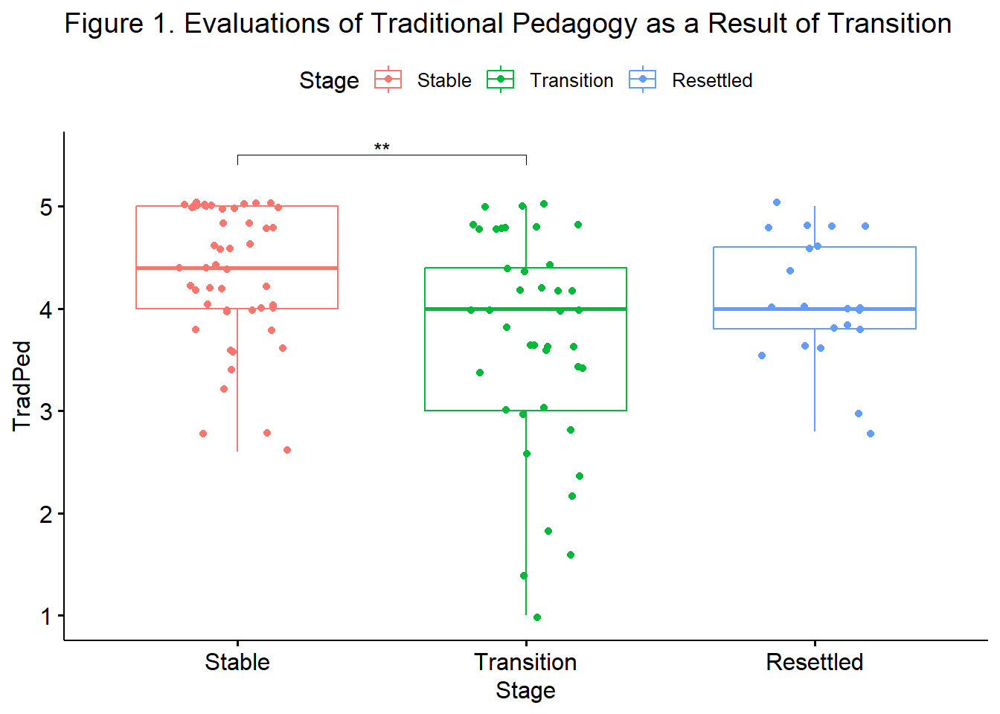

Chapter 7 One-way ANOVA
One-way ANOVA allows the researcher to analyze mean differences between two or more groups on a between-subjects factor. For the one-way ANOVA, each case (i.e., individual, participant) must have scores on two variables: a factor and a dependent variable.
The factor must be categorical in nature, dividing the cases into two or more groups or levels. These levels could be ordered (e.g., placebo, low dose, high dose) or unordered (e.g., cognitive-behavioral, existential, psychodynamic). The dependent variable must be assessed on a quantitative, continuous dimension. The ANOVA F test evaluates whether population means on the dependent variable differ across the levels of the factor.
One-way ANOVA can be used in experimental, quasi-experimental, and field studies. As we work through the chapter, we will examine some some of the requirements (assumptions) of the statistic in greater detail.
7.2 Workflow for One-Way ANOVA
The following is a proposed workflow for conducting a one-way ANOVA.
 Utilizing one-way ANOVA involves the following steps:
Utilizing one-way ANOVA involves the following steps:
- Prepare (upload) data.
- Explore data
- graphs
- descriptive statistics
- Checking distributional assumptions
- assessing normality via skew, kurtosis, Shapiro-Wilks
- checking for violation of homogeneity of variance assumption with Levene’s test; if we violate this we can use Welch’s omnibus ANOVA
- Compute the omnibus ANOVA (remember to use Welch’s if Levene’s p < .05)
- Compute post hoc comparisons, planned contrasts, or polynomial trends
- Managing Type I error
- Sample size/power analysis (which you should think about first – but in the context of teaching ANOVA, it’s more pedagogically sensible, here)
7.3 Research Vignette
The exceptionalizing racial stereotype is microaggression framed as interpersonally complimentary, but perpetuates negative stereotypical views of a racial/ethnic group. We are using data that is simulated from a random clinical trial (RCT) conducted by Tran and Lee (2014).
The one-way ANOVA examples we are simulating represent the post-only design which investigated three levels of the exceptionalizing stereotype in a sample of Asian American participants. This experimental design involved a confederate (posing as a peer) whose parting comment fell into the low racial loading, high racial loading, or control conditions.
| COND | Assignment | Manipulation | Post-test Observation |
|---|---|---|---|
| Low racial loading condition (n = 22) | Random | Yes: “Nice talking to you. You speak English well.” | Accurate |
| High racial loading (n = 23) | Random | Yes: “Nice talking to you. You speak English well for an Asian.” | Accurate |
| Control (n = 23) | Random | No: “Nice talking to you.” | Accurate |
In the article, the one-way ANOVA is a relatively smaller focus. In fact, Tran and Lee (2014) reported results from two ANOVAs and 4 ANCOVAs, using a pre-test as a covariate. A preprint of their article is available here. If you are interested in this topic, I highly encourage you to review the more complex analyses and their results.
- Accurate is the DV we will be exploring in this lesson. Participants rated how accurate they believed their partner’s impression of them was (0 = very inaccurate, 3 = very accurate).
- moreTalk is the DV suggested as a practice problem. Participants rated how much longer they would continue the interaction with their partner compared to their interactions in general (-2 = much less than average, 0 = average, 2 = much more than average).
7.3.1 Data Simulation
Simulating data for a one-way ANOVA requires the sample size (listed first), mean (mean=), and standard deviation (sd=) for each of the groups (Crump, 2018). In creating this simulation, I used the data from Table 1 in the Tran and Lee (2014) article. Having worked the problem several times, I made one change. The group sizes in the original study were 23, 22, and 23. To increase the probability that we would have statistically significant results in our worked example, I increased the sample sizes to 30 for each group. In this way we have a perfectly balanced (equal cell sizes) design.
# Note, this script results in a different simulation than is in the
# ReadySetR lesson sets a random seed so that we get the same results
# each time
set.seed(210820)
# sample size, M and SD for each group
Accurate <- c(rnorm(30, mean = 1.18, sd = 0.8), rnorm(30, mean = 1.83,
sd = 0.58), rnorm(30, mean = 1.76, sd = 0.56))
# set upper bound for DV
Accurate[Accurate > 3] <- 3
# set lower bound for DV
Accurate[Accurate < 0] <- 0
# sample size, M and SD for each group
moreTalk <- c(rnorm(30, mean = -0.82, sd = 0.91), rnorm(30, mean = -0.39,
sd = 0.66), rnorm(30, mean = -0.04, sd = 0.71))
# set upper bound for DV
moreTalk[moreTalk > 2] <- 2
# set lower bound for DV
moreTalk[moreTalk <- 2] <- -2
# IDs for participants
ID <- factor(seq(1, 90))
# name factors and identify how many in each group; should be in same
# order as first row of script
COND <- c(rep("High", 30), rep("Low", 30), rep("Control", 30))
# groups the 3 variables into a single df: ID#, DV, condition
accSIM30 <- data.frame(ID, COND, Accurate, moreTalk)Examining the data is important for several reasons. First, we can begin our inspection for anomalies. Second, if we are confused about what statistic we wish to apply, understanding the characteristics of the data can provide clues.
We can see the entire dataframe by clicking open the dataframe object found in the Environment window of R studio. This will open a tab that allows scrolling up/down and left/right through the entire dataframe. It is also possible to sort by variables.
Alternatively the head() function from base R displays a static view of the first six rows of data.
ID COND Accurate moreTalk
1 1 High 0.4203896 -0.6398265
2 2 High 1.1226505 -2.0000000
3 3 High 0.8852238 -0.2497750
4 4 High 1.5689439 0.1455637
5 5 High 1.8307196 -0.9960413
6 6 High 1.8874431 -1.0692978Yet another option is to use the str() function from base R. This provides a list of variables and provides detail about their formats.
'data.frame': 90 obs. of 4 variables:
$ ID : Factor w/ 90 levels "1","2","3","4",..: 1 2 3 4 5 6 7 8 9 10 ...
$ COND : chr "High" "High" "High" "High" ...
$ Accurate: num 0.42 1.123 0.885 1.569 1.831 ...
$ moreTalk: num -0.64 -2 -0.25 0.146 -0.996 ...If we look at this simple dataset, we see that we see that
- COND is a grouping variable) with 3 levels (high, low, control)
- it is presently in “chr” (character) format, it needs to be changed to be a factor.
- Accurate is a continuous variable
- it is presently in “num” (numerical) format, this is an appropriate format.
- moreTalk is a continuous variable
- it is presently in “num” (numerical) format, this is an appropriate format
There are many ways to convert variables to factors; here is one of the simplest.
Let’s recheck the structure
'data.frame': 90 obs. of 4 variables:
$ ID : Factor w/ 90 levels "1","2","3","4",..: 1 2 3 4 5 6 7 8 9 10 ...
$ COND : Factor w/ 3 levels "Control","High",..: 2 2 2 2 2 2 2 2 2 2 ...
$ Accurate: num 0.42 1.123 0.885 1.569 1.831 ...
$ moreTalk: num -0.64 -2 -0.25 0.146 -0.996 ...By default, R orders factors alphabetically. This means, analyses will assume that “Control” (C) is the lowest condition, then “High,” then “Low.” Since these have theoretically ordered values, we want them in the order of “Control,” “Low,” “High.”
Here is the script to create an ordered factor. The order in which the variables are entered in the concatenated list (“c”) establishes the order (e.g., levels).
Again, we can check our work.
'data.frame': 90 obs. of 4 variables:
$ ID : Factor w/ 90 levels "1","2","3","4",..: 1 2 3 4 5 6 7 8 9 10 ...
$ COND : Factor w/ 3 levels "Control","Low",..: 3 3 3 3 3 3 3 3 3 3 ...
$ Accurate: num 0.42 1.123 0.885 1.569 1.831 ...
$ moreTalk: num -0.64 -2 -0.25 0.146 -0.996 ...Now our variables are suitable for analysis.
Although you may continue working with the simulated data, at this point, you may wish to export and/or import the data as a .csv (think “Excel lite”) or .rds (R object that preserves the information about the variables – such changing COND to an ordered factor). Here is the code to do so. The data should save in the same folder as the .rmd file. Therefore, it is really important (think, “good R hygiene”) to have organized your folders so that your .rmd and data files are co-located.
I have hashtagged out the code. If you wish to use it, delete the hashtags. Although I show the .csv code first, my personal preference is to save R data as .rds files. While they aren’t easy to “see” as an independent file, they retain the formatting of the variables. For a demonstration, refer back to the Ready_Set_R lesson.
# write the simulated data as a .csv write.table(accSIM30,
# file='accSIM.csv', sep=',', col.names=TRUE, row.names=FALSE) bring
# back the simulated dat from a .csv file acc_csv <-
# read.csv('accSIM.csv', header = TRUE)If you have cleared the environment and then imported the .csv file, examining the structure of the .csv file shows that the prior formatting is lost. This is demonstrated in the accompanying screencast.
Below is the code to write and then import the data as an .rds file.
# to save the df as an .rds (think 'R object') file on your computer;
# it should save in the same file as the .rmd file you are working
# with saveRDS(accSIM30, 'accSIM.rds') bring back the simulated dat
# from an .rds file acc_RDS <- readRDS('accSIM.rds')By examining the structure of the .rds file we can see that the .rds file preserves the variable formatting. This is demonstrated in the accompanying screencast.
Note that I renamed each of these data objects to reflect the form in whic I saved them (i.e., “acc_csv”, “acc_RDS”). If you have followed this step, you will want to rename the file before continuing with the rest of the chapter. Alternatively, you can start from scratch, re-run the code to simulate the data, and skip this portion on importing/exporting data.
7.3.2 Quick Peek at the Data
This lesson’s exploration of the data is designed to introduce multiple tools for doing so. In this first demonstration I will quickly produce a mean and standard deviation using functions from base R.
The aggregate() function lets R know we want output by a grouping variable. We then list the variable of interest, a tilda (I think of the word “by”), and then the grouping variable (I think “Accurate by COND”). Finally we list the dataframe and the statistic (e.g., mean or standard deviation). R is case sensitive – so check your capitalization if your code fails to execute.
COND Accurate
1 Control 1.756195
2 Low 1.900116
3 High 1.152815 COND Accurate
1 Control 0.4603964
2 Low 0.6301138
3 High 0.6587486Inspection of the means and standard deviations shows that the racially loaded high condition has the lowest accuracy score (\(M = 1.153\)) and the largest variability (\(SD = 0.659\)).
Graphing data is a best practice for early exploration and inspection of the data. In ANOVA models the boxplot is especially useful. The ggpubr package offers terrific options. After calling ggpubr::ggboxplot(), we list the data frame and name the x and y variables. That would be sufficient to produce a simple boxplot. The “add = jitter” command will plot each individual case, but “jitter” them to the right and left such that they are not overlapping and we can see all scores. For fun I added some color.
 In boxplots the center value is the median. The box spans the interquartile range and ranges from the 25th to the 75th percentile. The whiskers cover 1.5 times the interquartile range. When this does not capture the entire range, outliers are represented with dots.
In boxplots the center value is the median. The box spans the interquartile range and ranges from the 25th to the 75th percentile. The whiskers cover 1.5 times the interquartile range. When this does not capture the entire range, outliers are represented with dots.
From both the boxplot and the linegraph with error bars, we can see that participants in the low racial loading condition have the highest accuracy ratings. This is followed by the control and then high racial loading conditions. Are these differences statistically significant? This is why we need the one-way ANOVA.
7.4 Working the Oneway ANOVA (by hand)
ANOVA was developed by Sir Ronald Fisher in the early 20th century. The name is a bit of a misnomer – rather than analyzing variances, we are investigating differences in means (but the formula does take variances into consideration…stay tuned).
ANOVA falls squarely within the tradition of null hypothesis significance testing (NHST). As such, a formal, traditional, ANOVA begins with statements of the null and alternate hypotheses. Note. In their article, Tran and Lee (2014) do not list such. This is farly common in present-day journal articles.
In our example, we would hypothesize that the population means (i.e., Asian or Asian American individuals in the U.S.) are equal: \[H_{O}: \mu _{1} = \mu _{2} = \mu _{3}\] There are an number of ways that the \(H_{O}\) could be false. Here are a few: \[H_{a1}: \mu _{1} \neq \mu _{2} \neq \mu _{3}\] \[H_{a2}: \mu _{1} = \mu _{2} > \mu _{3}\] \[H_{a3}: \mu _{1} > \mu _{2} > \mu _{3}\] The bottom line is that if we have a statistically significant omnibus ANOVA (i.e., the test of the overall significance of the model) and the \(H_{O}\) is false, somewhere between the three levels of the grouping factor, the means are statistically significantly different from each other.
In evaluating the differences between means, one-way ANOVA compares:
- systematic variance to unsystematic variance
- explained to unexplained variation
- experimental effect to the individual differences
- model variance to residual variance
- between group variance to within group variance
The ratio of these variances is the F-ratio.
Navarro (2020a) offers a set of useful figures to compare between- and within-group variation.

Figure 7.1: Graphical illustration of “between groups” variation

Figure 7.2: Graphical illustration of “within groups” variation
When between-group variance (i.e,. model variance) is greater than within-group variance (i.e., residual variance) there may be support to suggest that there are statistically significant differences between groups.
Let’s examine how variance is partitioned by hand-calculating sums of squares total, model, and residual. Along the way we will use some basic R skills to manipulate the data.
7.4.1 Sums of Squares Total
Sums of squares total represents the total amount of variance within our data. Examining the formula(s; there are variants of each) can help us gain a conceptual understanding of this.
In this first version of the formula we can see that the grand (or overall) mean is subtracted from each individual score, squared, and then summed. This makes sense: sums of squares, total.
\[SS_{T}= \sum (x_{i}-\bar{x}_{grand})^{2}\] In the next version of the formula we see that the sums of square total is the addition of the sums of squares model and residual.
\[SS_{T}= SS_{M} + SS_{R}\]
“Between” and “within” are another way to understand “model” and “residual.” This is reflected in the next formula.
\[SS_{T}= SS_{B} + SS_{W}\] Finally, think of the sums of squares total as the grand variance multiplied by the overall degrees of freedom (N - 1).
\[SS_{T}= s_{grand}^{2}(n-1)\] Let’s take a moment to hand-calculate \(SS_{T}\). Not to worry – we’ll get R to do the math for us!
Our grand (i.e., overall) mean is
[1] 1.603042Subtracting the grand mean from each Accurate rating yields a mean difference. In the script below I have used the mutate() function from the dplyr package (a part of the tidyverse) to created a new variable (” m_dev”) in the dataframe. The tidyverse package is one of the few exceptions that I will open via the library. This is because we need it if we are going to use the pipe (%>%) to string parts of our script together.
library(tidyverse)
accSIM30 <- accSIM30 %>%
dplyr::mutate(m_dev = Accurate-mean(Accurate))
head(accSIM30) ID COND Accurate moreTalk m_dev
1 1 High 0.4203896 -0.6398265 -1.18265259
2 2 High 1.1226505 -2.0000000 -0.48039170
3 3 High 0.8852238 -0.2497750 -0.71781837
4 4 High 1.5689439 0.1455637 -0.03409829
5 5 High 1.8307196 -0.9960413 0.22767748
6 6 High 1.8874431 -1.0692978 0.28440098Pop quiz: What’s the sum of our new m_dev variable? Let’s check.
[1] 0.00000000000000003830065Unless you run the script at the top of this document (“options(scipen=999)”), R will (seemingly selectively) use scientific e notation to report your results. The proper value is one where the base number (before the “e”) is multiplied by 10, raised to the power shown: \(3.830065 * 10^{17}\) Another way to think of it is to move the decimal 17 places to the left. In any case, this number is essentially zero.
Back to the point of sums of squares total, the sum of deviations around the grand mean will always be zero. To make them useful, we must square them:
ID COND Accurate moreTalk m_dev m_devSQ
1 1 High 0.4203896 -0.6398265 -1.18265259 1.398667144
2 2 High 1.1226505 -2.0000000 -0.48039170 0.230776185
3 3 High 0.8852238 -0.2497750 -0.71781837 0.515263216
4 4 High 1.5689439 0.1455637 -0.03409829 0.001162694
5 5 High 1.8307196 -0.9960413 0.22767748 0.051837034
6 6 High 1.8874431 -1.0692978 0.28440098 0.080883915If we sum the squared mean deviations we will obtain the total variance (sums of squares total):
[1] 39.67818This value, the sum of squared deviations around the grand mean, is our \(SS_T\). The associated degrees of freedom is \(N - 1\); in our case this is 90-1 = 89.
In one-way ANOVA, we divide \(SS_T\) into model/between sums of squares and residual/within sums of squares.
The model generally represents the notion that the means are different than each other. We want the variation between our means to be greater than the variation within each of the groups from which our means are calculated.
7.4.2 Sums of Squares for the Model (or Between)
We just determined that the total amount of variation within the data is 39.678 units. From this we can estimate how much of this variation our model can explain. \(SS_M\) tells us how much of the total variation can be explained by the fact that different data points come from different groups.
We see this reflected in the formula below, where
- the grand mean is subtracted from each group mean
- this value is squared and multiplied by the number of cases in each group
- these values are summed
\[SS_{M}= \sum n_{k}(\bar{x}_{k}-\bar{x}_{grand})^{2}\]
To calculate this, we start with the grand mean (previously calculated): 1.603.
We also estimate the group means. The script below provides the formula, the dataset, and the particular statistic (mean) that we want calculated.
COND Accurate
1 Control 1.756195
2 Low 1.900116
3 High 1.152815This script is used to extract the specific means so that I can demonstrate the formulas with the words/terms as well as the numbers.
[1] 1.756195[1] 1.900116[1] 1.152815 COND n
1 Control 30
2 Low 30
3 High 30[1] 30[1] 30[1] 30This formula occurs in three chunks, representing the control, low, and high racial loading conditions. In each of the chunks we have the \(n\), group mean, and grand mean.
# Calculated by using object names from our calculations
SSM <- nControl * (ControlMean - GrandMean)^2 + nLow * (LowMean - GrandMean)^2 +
nHigh * (HighMean - GrandMean)^2
SSM[1] 9.432402# calculated by specifying the actual values from our calculations
30 * (1.756 - 1.603)^2 + 30 * (1.9 - 1.603)^2 + 30 * (1.153 - 1.603)^2[1] 9.42354This value, \(SS_M\) is the amount of variance accounted for by the model; that is, the the amount of variance accounted for by the grouping variable/factor, COND. Degrees of freedom for \(SS_M\) is always one less than the number of elements (e.g., groups) used in its calculation (\(k-1\)). Because we have three groups, our degrees of freedom for the model is two.
7.4.3 Sums of Squares Residual (or within)
To recap, we know there are 39.678 units of variation to be explained in our data. Our model explains 9.432 of these units. Sums of squares residual tells us how much of the variation cannot be explained by the model. This value is influenced by extraneous factors; some will refer to it as “noise.”
Looking at the formula can assist us in with a conceptual formula. In \(SS_R\) we subtract the group mean from each individual member of the group and then square it.
\[SS_{R}= \sum(x_{ik}-\bar{x}_{k})^{^{2}}\] Below is another approach to calculating\(SS_R\). In this one the variance for each group is multiplied by its respective degrees of freedom, then summed.
\[SS_{R}= s_{group1}^{2}(n-1) + s_{group2}^{2}(n-1) + s_{group3}^{2}(n-1))\] Again, the formula is in three chunks – but this time the calculations are within-group. We need the variance (the standard deviation squared) for the calculation.
COND Accurate
1 Control 0.4603964
2 Low 0.6301138
3 High 0.6587486This script is used to create objects for each of the SDs associated with the grouping level. I created this so that I could demonstrate the formulas with words/terms as well as with numbers.
[1] 0.4603964[1] 0.6301138[1] 0.65874867.4.3.1 On the relationship between standard deviation and variance
Early in statistics training the difference between standard deviation (s or \(\sigma_{n-1}\)) and variance(\(s^{2}\) or \(\sigma^{2}\)) can be confusing. This calculation demonstrates the relationship between standard deviation and variance. Variance is the standard deviation, squared.
#when squared, the standard deviation of the control group,
#hould equal the variance reported in the next chunk
sdControl^2[1] 0.2119648 COND Accurate
1 Control 0.2119648
2 Low 0.3970434
3 High 0.4339497This script is used to extract the variances for each level of the grouping variable. I created them to be able to demonstrate the later formulas with words/terms as well as numbers.
[1] 0.2119648[1] 0.3970434[1] 0.4339497We will use the second formula to calculate \(SS_R\). For each of the groups, we multiply the variance by the respective degrees of freedom for the group (n - 1).
# Calculated by using object names from our calculations
SSR <- varControl * (nControl - 1) + varLow * (nLow - 1) + varHigh * (nHigh -
1)[1] 30.24578[1] 30.247The value for our \(SS_R\) is 30.246. Degrees of freedom for the residual is \(df_T - df_M\).
- \(df_T\) was \(N-1\): 90 - 1 = 89
- \(df_M\) was \(k - 1\): 3 - 1 = 2
- Therefore, \(df_R\): is 89 - 2 = 87
7.4.4 Relationship between \(SS_T\), \(SS_M\), and \(SS_R\).
In case it is not clear:
\(SS_T\) = 9.432 + 30.246
[1] 39.67818[1] 39.679Our SST, calculated from above was 39.678.
7.4.5 Mean Squares Model & Residual
Our estimates of variation were sums of squares and are influenced by the number of scores that were summed. We can correct this bias by calculating their average – the mean squares or \(MS\). We will use these in the calculation of the \(F\) ratio – the statistic that tests if there are significant differences between groups.
Like the constellation of sums of squares, we calculate mean squares for the model (\(MS_M\)) and residual(\(MS_R\)). Each formula simply divides the corresponding sums of squares by their respective degrees of freedom.
\[MS_M = \frac{SS_{M}}{df{_{M}}}\] Regarding the calculation of our model mean squares:
- \(SS_M\) was 9.432
- \(df_M\) was 2
- Therefore, \(MS_M=\)is:
[1] 4.716201[1] 4.716\[MS_R = \frac{SS_{R}}{df{_{R}}}\] Regarding the calculation of our model residual squares:
- \(SS_R\) was 30.247
- \(df_R\) was 87
- Therefore, \(MS_R\) is:
[1] 0.3476526[1] 0.34766677.4.6 Calculating the F Statistic
The F statistic (or F ratio) assesses the ratio (as its name implies) of variation explained by the model to unsystematic factors (i.e., the residual). Earlier we used “between” and “within” language. Especially when we think of our example – where the model is composed of three groups, we can think of the F statistic as assessing the ratio of variation explained by between-subjects differences to within-subjects differences. Navarro’s (2020b) figures (earlier in the chapter) illustrate this well.
\[F = \frac{MS_{M}}{MS_{R}}\] Regarding the calculation of our F-ratio:
- \(MS_M\) was 4.716
- \(MS_R\) was 0.348
- Therefore, \(F\) is:
[1] 13.56584[1] 13.551727.4.7 Source Table Games
These last few calculations are actually less complicated than this presentation makes them seem. To better understand the relation between sums of squares, degrees of freedom, and mean squares, let’s play a couple of rounds of Source Table Games!
Rules of the game:
- In each case, mean squares are determined by dividing the sums of squares by its respective degrees of freedom.
- The F statistic is determined by dividing \(MS_M\) by \(MS_R\)
Knowing only two of the values, challenge yourself to complete the rest of the table. Before looking at the answers (below), try to the fill in the blanks based in the table based on what we have learned so far.
| Game | Total (df, N - 1) | Model (df, k -1) | Residual (df, \(df_T - df_M\)) |
|---|---|---|---|
| SS | 39.678(89) | 9.432(2) | ______ |
| MS | NA | ______ | ______ |
\(F = MS_{M}/MS_{R}\) = ______
DON’T PEEK! TRY TO DO THE CALCULATIONS IN THE “SOURCE TABLE GAMES” EXERCISE BEFORE LOOKING AT THESE ANSWERS
| Answers | Total (df, N - 1) | Model (df, k -1) | Residual (df, \(df_T - df_M\)) |
|---|---|---|---|
| SS | 39.678(89) | 9.432(2) | 30.247(87) |
| MS | NA | 4.716` | 0.348 |
\(F = MS_{M}/MS_{R}\) = 13.566
To determine whether or not it is statistically significant, we can check a table of critical values (Zach, 2019) for the F test.
Our example has 2 (numerator) and 87 (denominator) degrees of freedom. Rolling down to the table where \(\alpha = .05\), we can see that any \(F\) value > 3.11 (a value somewhere between 3.07 and 3.15) will be statistically significant. Our \(F\) = 13.566, so we have clearly exceeded the threshold. This is our omnibus F test.
We can also use a look-up function, which follows this general form: qf(p, df1, df2. lower.tail=FALSE)
[1] 3.101296Significance at this level lets us know that there is at least 1 statistically significant difference between our control, low, and high racially loaded conditions. While it is important to follow-up to see where these significant differences lie, we will not do these by hand. Rather, let’s rework the problem in R.
7.5 Working the One-Way ANOVA with R Packages
Let’s rework the problem in R. We start at the top of the flowchart, evaluating the statistical assumptions.
7.5.1 Evaluating the Statistical Assumptions
All statistical tests have some assumptions about the data. The one-way ANOVA has four assumptions:
- The dependent variable is normally distributed for each of the populations as defined by the different levels of the factor. We will examine this by
- evaluating skew and kurtosis
- visually inspecting the distribution
- conducting Shapiro-Wilk tests of normality
- examing a QQ plot
- The variances of the dependent variable are the same for all populations. This is often termed the homogeneity of variance assumption. We will examine this with
- Levene’s Test
- The cases represent random samples from the populations and scores on the test variable are independent of each other. That is, comparing related cases (e.g., parent/child, manager/employee, time1/time2) violates this assumption and this question would need to be evaluated by a different statistic such as repeated measures ANOVA or dyadic data analysis.
- Independence in observations is a research design issue. ANOVA is not robust to violating this assumption. When observations are correlated/dependent there is a dramatic increase in Type I error.
- The dependent variable is measured on an interval scale.
- If the dependent variable is categorical, another statistic (such as logistic regression) should be chosen.
7.5.1.1 Is the dependent variable normally distributed across levels of the factor?
From the psych package, the describe() function can be used to provide descriptive statistics (or, “descriptives”) of continuously scaled variables (i.e., variables measured on the interval or ratio scale). In this simple example, we can specify the specific continuous, DV.
# we name the function in parentheses we list data source
psych::describe(accSIM30$Accurate, type = 1) #the type=1 argument provides the specific skew and kurtosis values for which Kline's recommendations are intended vars n mean sd median trimmed mad min max range skew kurtosis se
X1 1 90 1.6 0.67 1.73 1.62 0.68 0 3 3 -0.29 -0.43 0.07If we want descriptives for each level of the grouping variable (factor), we can use the describeBy() function of the psych package. The order of entry within the script is the DV followed by the grouping variable (IV). In our research vignette below, I mentally interpret the Accurate ~ COND formula as, “Accurate by condition.”
# It is unnecessary to create an object, but an object allows you to
# do cool stuff, like write it to a .csv file and use that as a basis
# for APA style tables In this script we can think 'Accurate by COND'
# meaning that the descriptives for accuracy will be grouped by COND
# which is a categorical variable mat = TRUE presents the output in
# matrix (table) form digits = 3 rounds the output to 3 decimal
# places data = accSIM30 is a different (I think easier) way to
# identify the object that holds the dataframe
des.mat <- psych::describeBy(Accurate ~ COND, mat = TRUE, digits = 3, data = accSIM30,
type = 1)
# Note. Recently my students and I have been having intermittent
# struggles with the describeBy function in the psych package. We
# have noticed that it is problematic when using .rds files and when
# using data directly imported from Qualtrics. If you are having
# similar difficulties, try uploading the .csv file and making the
# appropriate formatting changes. displays the matrix object that we
# just created
des.mat item group1 vars n mean sd median trimmed mad min max
Accurate1 1 Control 1 30 1.756 0.460 1.893 1.767 0.392 0.781 2.745
Accurate2 2 Low 1 30 1.900 0.630 2.007 1.918 0.458 0.655 3.000
Accurate3 3 High 1 30 1.153 0.659 1.131 1.128 0.743 0.000 2.669
range skew kurtosis se
Accurate1 1.964 -0.289 -0.364 0.084
Accurate2 2.345 -0.398 -0.288 0.115
Accurate3 2.669 0.218 -0.528 0.120# optional to write it to a .csv file for further manipulation and
# formatting for a paper or presentation
write.csv(des.mat, file = "Table1.csv")Skew and kurtosis are one way to evaluate whether or not data are normally distributed. When we use the “type=1” argument, the skew and kurtosis indices in the psych package can be interpreted according to Kline’s (2016a) guidelines. Regarding skew, values greater than the absolute value of 3.0 are generally considered “severely skewed.” Regarding kurtosis, “severely kurtotic” is argued to be anywhere greater 8 to 20. Kline recommended using a conservative threshold of the absolute value of 10.
The Shapiro-Wilk test evaluates the hypothesis that the distribution of the data deviates from a comparable normal distribution. If the test is non-significant (p >.05) the distribution of the sample is not significantly different from a normal distribution. If, however, the test is significant (p < .05), then the sample distribution is significantly different from a normal distribution. The rstatix package can conduct this test for us.
library(tidyverse)
shapiro <- accSIM30 %>%
group_by(COND) %>%
rstatix::shapiro_test(Accurate)
shapiro# A tibble: 3 × 4
COND variable statistic p
<fct> <chr> <dbl> <dbl>
1 Control Accurate 0.954 0.215
2 Low Accurate 0.944 0.115
3 High Accurate 0.980 0.831The \(p\) values for the distributions of the dependent variable (accurate) in each of the three conditions are all well above .05. This tells us that the Accurate variable does not deviate from a statistically significant distribution at any level (Control, W = 0.954, p = 0.215; Low, W = 0.944, p = 0.115`; High, W = 0.980, p = 0.831).
Especially in the more simple “ANOVA’s” I like this form of the Shapiro-Wilk test because it makes it clear that we expect normality within each of the grouping levels. This approach, however, is only appropriate when there are a low number of levels/groupings and there are many data points per group. As models become more complex, researchers should use the model-based option for assessing normality. To do this, we first create an object that tests our research model.
Although that model (a regression model) has information about our primary statistic, we are using it to carefully investigate the assumption of normality. One product of the analysis is residuals. Residuals are the unexplained variance in the outcome (or dependent) variable after accounting for the predictor (or independent) variable. When we plot these “leftovers” against the values of x, we can visualize the fit of the model in a QQ plot. The dots represent the residuals. When they are relatively close to the line they not only suggest good fit of the model, but we know they are small and evenly distributed around zero (i.e., normally distributed).
 We can also use the model in a Shapiro-Wilk test. As before, we want a non-significant result.
We can also use the model in a Shapiro-Wilk test. As before, we want a non-significant result.
# A tibble: 1 × 3
variable statistic p.value
<chr> <dbl> <dbl>
1 residuals(res_model) 0.979 0.150These results parallel what we have already learned. That is, the non-significant p value associated with the model-based Shapiro-Wilk test of normality indicates that our distribution of residuals does not differ from a normal distribution (\(W = 0.979, p = 0.15\)). Given the space restrictions in journal articles and the greater interest in results of the primary analyses, I am more likely to report model-level results than the results from the cell-based Shapiro-Wilk tests.
There are limitations to the Shapiro-Wilk test. As the dataset being evaluated gets larger, the Shapiro-Wilk test becomes more sensitive to small deviations; this leads to a greater probability of rejecting the null hypothesis (null hypothesis being the values come from a normal distribution). Green and Salkind (2017c) advised that ANOVA is relatively robust to violations of normality if there are at least 15 cases per cell and the design is reasonably balanced (i.e., equal cell sizes).
7.5.1.2 Should we consider removing outliers?
If our data pointed to significant violations of normality, we could consider identifying and removing outliers. Removing data is a serious consideration that should not be made lightly. If needed, though, here is a tool to inspect the data and then, if necessary, remove it.
We can think of outlier identification in a couple of ways. First, we might look at dependent variable across the entire dataset. That is, without regard to the levels of the grouping variable. We can point rstatix::identify_outliers() to the data.
[1] ID COND Accurate moreTalk m_dev m_devSQ is.outlier
[8] is.extreme
<0 rows> (or 0-length row.names)The output “0 rows” is not an error. It means if we consider the distribution of the Accurate variable as a whole, there are no outliers. Let’s re-run the code, this time requiring it to look within each of the grouping levels of the condition variable.
# A tibble: 2 × 8
COND ID Accurate moreTalk m_dev m_devSQ is.outlier is.extreme
<fct> <fct> <dbl> <dbl> <dbl> <dbl> <lgl> <lgl>
1 Low 31 0.663 -1.10 -0.940 0.884 TRUE FALSE
2 Low 39 0.655 -0.201 -0.948 0.899 TRUE FALSE This output tells us that in the low-racial loading condition there are two cases that are identified as outliers (denoted as TRUE) but not as extreme outliers (denoted as FALSE). Handily, the function returns information (i.e., the values of the Accurate and moreTalk variables, the ID number) that would help us delete it.
Let’s say that, after very careful consideration, we decided to remove the case with ID = 31. We could use dplyr::filter() to do so. In this code, the filter() function locates all the cases where ID = 31. The exclamation point that precedes the equal sign indicates that the purpose is to remove the case.
Once executed, we can see that this case is no longer in the dataframe. Although I demonstrated this in the accompanying lecture, I have hashtagged out the command because I would not delete the case. If you already deleted the case, you can return the hashtag and re-run all the code up to this point.
7.5.1.3 Are the variances of the dependent variable similar across the levels of the grouping factor?
The Levene’s test evaluates the ANOVA assumption that variances of the dependent variable for each level of the independent variable are similarly distributed. We want this to be non-significant (\(p\) > .05). If violated, we need to use an ANOVA test that is “robust to the violation of the homogeneity of variance” (e.g., Welch’s oneway).
# A tibble: 1 × 4
df1 df2 statistic p
<int> <int> <dbl> <dbl>
1 2 87 1.70 0.190We write the result of the Levene’s as \(F(2, 87) = 1.695, p = 0.190\). Because \(p\) > .05, we know that the result is nonsignficant – that the variances of the three groups are not statistically significantly different from each other. If the results had been statistically significantly different, we would have needed to use a Welch’s \(F\) or robust version of ANOVA.
7.5.1.4 Summarizing results from the analysis of assumptions
It is common for an APA style results section to begin with a review of the evaluation of the statistical assumptions. As we have just finished these analyses, I will document what we have learned so far:
Regarding the assumption of normality, skew and kurtosis values at each of the levels of the condition value fell well below the thresholds that Kline (2016a) identified as concerning (i.e., below |3| for skew and |10| for kurtosis). Similarly, no extreme outliers were identified and results of a model-based Shapiro-Wilk test of normality, indicated that the model residuals did not did differ from a normal distribution \((W = 0.979, p = 0.15)\). Finally, Levene’s homogeneity of variance test indicated no violation of the homogeneity of variance assumption (\(F[2, 87] = 1.695, p = 0.190\)).
7.5.2 Computing the Omnibus ANOVA
Having met all the assumptions, we are now ready to calculate the omnibus \(F\) test. Omnibus is the term applied to the first F test that evaluates if all groups have the same mean (Chen et al., 2018). If this test is not significant there is no evidence in the data to reject the null; that is, there is no evidence to suggest that group means are different. If it is significant – and there are three or more groups – follow-up testing will be needed to determine where the differences lie.
We will use rstatix::anova_test to calculate the omnibus. In script we must point to the data and provide the formula (Accurate ~ COND). By specifying “detailed=TRUE” we get can view our sums of squares values. When we run this test, we will save all of the results in an object. We can name this object anything – I will call it omnibus1w. When we create objects, we have to re-type the name of the object below our formula in order for the results to display. Objects are incredibly useful because we can later use them in follow-up tests, in creating figures, and in exporting results that we can use outside of R (e.g., to create tables for papers or presentations).
ANOVA Table (type II tests)
Effect DFn DFd F p p<.05 ges
1 COND 2 87 13.566 0.00000745 * 0.238The values we see map onto those we calculated by hand. Our \(SS_M\) (9.432) plus \(SS_R\) (30.246) sum to equal the \(SS_T\) (39.678). Dividing the two sums of squares by their respective degrees of freedom produces the means squared. Then, dividing the \(MS_M\) (COND) by \(MS_R\) (4.716/0.348) provides the F ratio. By using a table of F critical values, we already knew that our F value exceeded the value in the table of critical values. Here we see that p < .001.
The “F string” for an APA style results section should be written like this: \(F(2,87) = 13.566, p < .001\).
7.5.2.1 Effect size for the one-way ANOVA
Eta squared is one of the most commonly used measures of effect. It refers to the proportion of variability in the dependent variable/outcome that can be explained in terms of the independent variable/predictor. Conventionally, values of .01, .06, and .14 are considered to be small, medium, and large effect sizes, respectively.
You may see different values (.02, .13, .26) suggested as small, medium, and large effects – these values are used when multiple regression is used. A useful summary of effect sizes, guide to interpreting their magnitudes, and common usage can be found here (Watson, 2020).
The formula for \(\eta^2\) is straightforward. If we think back to our hand-calculations of all the sums of squares, we can see that this is the proportion of variance that is accounted for by the model.
\[\eta ^{2}=\frac{SS_{M}}{SS_{T}}\] Hand calculation, then, is straightforward.:
[1] 0.2377136Luckily, rstatix::anova_test() has provided the \(\eta ^{2}\) for us; it is found in the column, ges. Using the interpretive criteria suggests that our effect is rather large. We can update our F string this way: \(F(2,87) = 13.566, p < .001, \eta ^{2} = 0.238\). An APA style write-up of the omnibus might read like this:
Results of the omnibus ANOVA indicated a significant effect of COND on accuracy perception \((F[2,87] = 13.566, p < .001, \eta ^{2} = 0.238)\).
7.5.3 Follow-up to the Omnibus F
The F-test associated with the one-way ANOVA is the omnibus – giving the result for the overall test. Looking at the workflow for the one-way ANOVA we see that if we had had we had a non-significant \(F\), we would have stopped our analysis.
However, if the omnibus \(F\) is significant, we know that there is at least one pair of cells where there is a statistically significant difference. We have several ways (each with its own strengths/limitations) to figure out where these differences lie.
7.5.3.1 Planning for the management of Type I Error
Type I error is the concern about false positives – that we would incorrectly reject a true null hypothesis (i.e., claiming a statistically significant difference when there is not one). In ANOVA, we become increasingly concerned about Type I error as the number of pairwise or post hoc comparison increases. In ANOVA, we generally begin controlling for Type I error when follow-up to a significant omnibus test.
The traditional Bonferroni is, perhaps, the most well-known approach to managing Type I error. Although the lessons in this OER will frequently suggest alternative approaches to managing Type I error, I will quickly review it now because it is relatively straightforward and intuitive. We start by establishing the \(\alpha_{family}\); this is traditionally \(p = .05\).
Next, we determine how many pairwise comparisons that we are going to conduct. If we want to conduct all possible comparisons, we could use this formula to determing the number: \(N_{pc}=\frac{N_{g}(N_{g}-1)}{2}\), where
- \(N_{pc}\) is the number of pairwise comparisons, and
- \(N_{g}\) is the number of groups.
In the current research vignette, the COND factor had three levels: control, low, high. Thus, if we wanted to conduct all possible comparisons we would determine \(N_{pc}\) this way:
[1] 3Subsequently, we would compute a new alpha that would be used for each comparison with this formula: \(\alpha_{pc}=\frac{\alpha_{family}}{N_{pc}}\).
In the current research vignette we would calculate it this way:
[1] 0.01666667If we were to use the traditional Bonferroni to manage Type I error, the resultant \(p\) value would need to be < .017 in order for statistical significance to be claimed.
Luckily, the traditional Bonferroni (and other approaches to managing Type I error) has been reverse-engineered so that we do not have to determine the more conservative alpha levels. Rather, when we specify these options in the R script, the p value is adjusted and we can continue to use the customary criteria of \(p < .05, p < .01\), and \(p < .001\). In the case of the traditional Bonferonni, the p value has been adjusted upward by multiplying it (i.e., the raw p values) by the number of comparisons being completed. This holds the total Type I error rate across these tests to be \(\alpha = 0.05\).
Although the traditional Bonferroni is easy-to-understand and compute, it has been criticized as being too restrictive. That is, it increases the risk of making a Type II error (i.e., failing to reject the null hypothesis when it is false). Therefore, as we work through each option for follow-up testing for the ANOVA models, I will introduce one or more methods for managing Type I error that are commonly used with that follow-up. Descriptions of all the methods for managing Type I error that are used in this OER are described in an appendix
7.5.3.2 OPTION #1: Post hoc, pairwise, comparisons
A very common follow-up to the omnibus test from a one-way ANOVA is to conduct post hoc, pairwise comparisons, of all possible combinations of pairs.
Post hoc, pairwise comparisons are:
- used for exploratory work when no firm hypotheses were articulated a priori,
- used to compare the means of all combinations of pairs of an experimental condition,
- less powerful than planned comparisons because more strict criterion for significance should be used.
By specifying the formula of the ANOVA, the rstatix::t_test() function will provide comparisons of all possible combinations. The arguments in the code mirror those we used for the omnibus. Note that I am saving the results as an object. We will use this object (“ttest”) later when we create an accompanying figure.
We will request the traditional Bonferroni using the p.adjust.method. The rstatix::t_test() offers multiple options for adjusting the p values.
ttest <- rstatix::t_test(accSIM30, Accurate ~ COND, p.adjust.method = "bonferroni",
detailed = TRUE)
ttest# A tibble: 3 × 17
estimate estimate1 estimate2 .y. group1 group2 n1 n2 statistic p
* <dbl> <dbl> <dbl> <chr> <chr> <chr> <int> <int> <dbl> <dbl>
1 -0.144 1.76 1.90 Accu… Contr… Low 30 30 -1.01 3.17e-1
2 0.603 1.76 1.15 Accu… Contr… High 30 30 4.11 1.4 e-4
3 0.747 1.90 1.15 Accu… Low High 30 30 4.49 3.45e-5
# ℹ 7 more variables: df <dbl>, conf.low <dbl>, conf.high <dbl>, method <chr>,
# alternative <chr>, p.adj <dbl>, p.adj.signif <chr>The estimate column provide the mean difference between the two levels of the independent different. The estimate1/group1 and estimate2/group2 columns provide those means and identify the group levels. The statistic column provides the value of the t-test.
The p value is the unadjusted p-value, it will usually be “more significant” (i.e., a lower value) than the p.adj value that we specified in our code. The column p.adj.signif provides symbolic notation associated with the “p.adj” value. In this specific case we specified the traditional Bonferroni as the adjusted p value.
An APA style results section of this follow-up might read like this:
We followed up the significant omnibus with a series of post hoc, pairwise comparisons. We controlled for Type I error with the traditional Bonferroni adjustment. Results suggested that there were statistically significant differences between the control and high (\(M_{diff} = 0.601, p < .001\)) and low and high (\(M_{diff} = 0.75, p < 0.001\)) conditions, but not control and low conditions (\(M_{diff} = -.14, p = 0.951\)). Consequently, it appeared that only the highest degree of racial loading (e.g., “You speak English well for an Asian”) resulted in the decreased perceptions of accuracy of impressions from the confederate. Means and standard deviations are presented in Table 1 and complete ANOVA results are presented in Table 2. Figure 1 provides an illustration of the results.
Below is an augmentation of the figure that appeared at the beginning of the chapter. We can use the objects from the omnibus tests (named, “omnibus1w”) and post hoc pairwise comparisons (“ttest”) to add the ANOVA string and significance bars to the figure. Although they may not be appropriate in every circumstance, such detail can assist the figure in conveying maximal amounts of information.
# updates the ttest object so that it will auto-compute p-value
# positions in the graph
ttest <- ttest %>%
rstatix::add_xy_position(x = "COND")
# our original plot
Fig1 <- ggpubr::ggboxplot(accSIM30, x = "COND", y = "Accurate", add = "jitter",
color = "COND", title = "Figure 1. Accuracy Perception as a Function of Racial Loading Condition") +
ggpubr::stat_pvalue_manual(ttest, label = "p.adj.signif", tip.length = 0.02,
hide.ns = TRUE, y.position = c(3.25, 3.75))
# tip.length instructs how long to make the dropped edges of the
# significance bar; hide.ns will suppress or display non-significant
# bars; step.increase will separate the bars from each other so that
# they do not overlap
Fig1
Although it would not make a difference in this research vignette, the LSD (least significant differences) method is commonly used for controlling Type I error in the follow-up to a one-way ANOVA. The LSD method is appropriate in the one-way ANOVA scenario when there are only three levels in the factor. In this case, Green and Salkind (2017c) have suggested that alpha could be retained at the alpha level for the “family” (\(\alpha_{family}\)), which is conventionally \(p = .05\) and used both to evaluate the omnibus and, so long as they don’t exceed three in number, the planned or pairwise comparisons that follow.
7.5.3.3 OPTION #2: Non-orthogonal planned contrast
Another option for follow-up to a significant omnibus test is to evaluate planned comparisons. These can either be orthogonal (i.e., a complete partitioning of variance) or non-orthogonal (i.e., allowing for overlapping variance). We will start with a non-orthogonal example.
Planned comparisons are
- theory-driven comparisons constructed prior to data collection,
- based on the idea of partitioning the variance created by the overall effect of group differences into gradually smaller portions of variance, and
- more powerful than post hoc tests.
Planned contrasts involve further considerations regarding the partitioning of variance.
- There will always be \(k-1\) contrasts; in our case this means we will have two contrasts
- Each contrast must involve only two chunks of variance.
If the researcher chooses this route, they must decide which two comparisons will best tell the story of the data as it relates to the hypotheses and a priori theory. I will compare differences between the no and low racial loading conditions, and then between low and high racial loading conditions. I have chosen to not adjust the p values. In the results write-up, I will reference the LSD method as my rationale for this approach.
contr2 <- rstatix::pairwise_t_test(accSIM30, Accurate ~ COND, comparison = list(c("Control",
"Low"), c("Low", "High")), p.adjust.method = "none", detailed = TRUE)
contr2# A tibble: 2 × 10
.y. group1 group2 n1 n2 p method p.adj p.signif p.adj.signif
* <chr> <chr> <chr> <int> <int> <dbl> <chr> <dbl> <chr> <chr>
1 Accura… Contr… Low 30 30 3.47e-1 T-test 3.47e-1 ns ns
2 Accura… Low High 30 30 4.25e-6 T-test 4.25e-6 **** **** The format of the output is quite similar to the preceding examples. One difference is that this function does not provide mean differences nor confidence intervals. If I wanted them, I would need to calculate them.
An APA style results section of this follow-up might read like this:
We followed up the significant omnibus with two, non-orthogonal, planned comparisons. Because we had fewer than three comparisons, we chose to retain alpha at .05. This is consistent with the LSD method for control of Type I error (Green & Salkind, 2017c). Results suggested a statistically significant difference between the low and high (\(M_{diff} = 0.75, p < .001\)) conditions, but not between the control and low conditions (\(M_{diff} = -.14, p = 0.347\)). Consequently, it appeared that only the highest degree of racial loading (e.g., “You speak English well for an Asian”) resulted in the decreased perceptions of accuracy of impressions from the confederate. Means and standard deviations are presented in Table 1 and complete ANOVA results are presented in Table 2. Figure 2 provides an illustration of the results.
Below is an augmentation of the figure that appeared at the beginning of the chapter. We can use the previously created objects from the omnibus test (“omnibus1w”) and post hoc pairwise comparisons (“ttest”) to add the ANOVA string and significance bars to the figure. Although they may not be appropriate in every circumstance, such detail can assist the figure in conveying maximal amounts of information.
# updates the ttest object so that it will autocompute p-value
# positions in the graph
contr2 <- contr2 %>%
rstatix::add_xy_position(x = "COND")
# our original plot
ggpubr::ggboxplot(accSIM30, x = "COND", y = "Accurate", add = "jitter",
color = "COND", title = "Figure 2. Accuracy Perception as a Function of Racial Loading Condition") +
# retrieves information from the contr2 object; label tells the
# figure to use the 'p.adj.signif' column in the contr2 output
ggpubr::stat_pvalue_manual(contr2, label = "p.adj.signif", tip.length = 0.01,
hide.ns = TRUE, y.position = c(3.3)) #tip.length instructs how long to make the drop edges of the significance bar; hide.ns will suppress or display non-significant bars; step.increase will separate the bars from each other so that they do not overlap In this particular research vignette, I probably would not compute nor report the non-orthogonal option. The statistically significant difference pattern from the post hoc pairwise comparisons (Option 1) was straightforward. Using the non-orthogonal planned comparisons to aid in the control of Type I error way (a) does not change the result (i.e., does not increase the power) and (b) provides a less complete picture of the results.
In this particular research vignette, I probably would not compute nor report the non-orthogonal option. The statistically significant difference pattern from the post hoc pairwise comparisons (Option 1) was straightforward. Using the non-orthogonal planned comparisons to aid in the control of Type I error way (a) does not change the result (i.e., does not increase the power) and (b) provides a less complete picture of the results.
7.5.3.4 OPTION #3: Orthogonal planned contrasts
Orthogonal contrasts are even more sophisticated. Essential to conducting an orthogonal contrast is the requirement that if a group is singled out in one comparison it should be excluded from subsequent contrasts. The typical, orthogonal scenario with three ordered groups has only two contrasts:
- Control versus the combined low and high conditions
- because control was excluded, it should not reappear in the next contrast
- Low versus high
Especially in scenarios where there are no, low and high dose (or exposure) conditions, this is an elegant comparison. Unfortunately, at the time of this writing, the rstatix package does not offer a function to make these computations. We can, however, use functions from base R. Given that rstatix is a wrapper for the aov() function in base R, the code should feel somewhat familiar.
To work toward our orthogonal contrasts, we first need to create an object (“omnibus1w_b”) from a one-way ANOVA test using the base R, aov() function. You can see that the script involves the same elements as in rstatix. We can view the results byusing the summary() function.
Df Sum Sq Mean Sq F value Pr(>F)
COND 2 9.432 4.716 13.57 0.00000745 ***
Residuals 87 30.246 0.348
---
Signif. codes: 0 '***' 0.001 '**' 0.01 '*' 0.05 '.' 0.1 ' ' 1This foray into orthogonal contrasts gives us a peek into multiple regression. Let’s take a peek at “regression results” from our ANOVA model.
Call:
aov(formula = Accurate ~ COND, data = accSIM30)
Residuals:
Min 1Q Median 3Q Max
-1.24533 -0.32092 0.08642 0.30101 1.51646
Coefficients:
Estimate Std. Error t value Pr(>|t|)
(Intercept) 1.7562 0.1076 16.314 < 0.0000000000000002 ***
CONDLow 0.1439 0.1522 0.945 0.347095
CONDHigh -0.6034 0.1522 -3.963 0.000151 ***
---
Signif. codes: 0 '***' 0.001 '**' 0.01 '*' 0.05 '.' 0.1 ' ' 1
Residual standard error: 0.5896 on 87 degrees of freedom
Multiple R-squared: 0.2377, Adjusted R-squared: 0.2202
F-statistic: 13.57 on 2 and 87 DF, p-value: 0.000007446The values on the row labeled intercept are the values of the baseline or comparison group. Since CONDLow and CONDHigh follow, we know the three groups are sensibly ordered as control (0), low (1), and high (2).
While we are here, we observe that the control mean is 1.76 and that this value is statistically significantly different than zero. The CONDLow row represents the low level of the condition variable. The mean for “low” is 0.14 units bigger than the control group and this is not a statistically significant difference (\(p = 0.347\)). The third row is the high level of the condition variable. This value is 0.60 units lower than the control condition and is statistically significantly different than zero (\(p < .001\)). This information is consistent with what we have already learned.
To move forward with the orthogonal contrasts we must first specify our contrasts.
- Specifying the contrasts means you know their order within the factor
- Early in the data preparation, we created an ordered factor with Control, Low, High as the order.
- We want orthogonal contrasts, this means there will be
- k - 1 contrasts; with three groups we will have two contrasts
- once we single out a condition for comparison, we cannot use it again.
In contrast1 we compare the control condition to the combined low and high conditions. In contrast2 we discard the control condition (it was already singled out) and we compare the low and high conditions.
This is sensible because we likely hypothesize that any degree of racially loaded stereotypes may have a deleterious outcome, so we first compare control to the two conditions with any degree of racial loading. Subsequently, we compare the low and high levels of the factor.
In the second step we must bind the contrasts together and check the output to ensure that we’ve mapped them correctly.
# Contrast1 compares Control against the combined effects of Low and
# High.
contrast1 <- c(-2, 1, 1)
# Contrast2 excludes Control; compares Low to High.
contrast2 <- c(0, -1, 1)
# binding the contrasts together
contrasts(accSIM30$COND) <- cbind(contrast1, contrast2)
accSIM30$COND [1] High High High High High High High High High
[10] High High High High High High High High High
[19] High High High High High High High High High
[28] High High High Low Low Low Low Low Low
[37] Low Low Low Low Low Low Low Low Low
[46] Low Low Low Low Low Low Low Low Low
[55] Low Low Low Low Low Low Control Control Control
[64] Control Control Control Control Control Control Control Control Control
[73] Control Control Control Control Control Control Control Control Control
[82] Control Control Control Control Control Control Control Control Control
attr(,"contrasts")
contrast1 contrast2
Control -2 0
Low 1 -1
High 1 1
Levels: Control Low HighThinking back to the hand-calculations and contrast mapping, the table of weights that R just produced confirms that
- Contrast 1 compares the Control condition against the levels with any racial loading.
- Contrast 2 compares the Low and High loadings.
Finally, we create a new aov() model and apply the contrasts.
Call:
aov(formula = Accurate ~ COND, data = accSIM30)
Residuals:
Min 1Q Median 3Q Max
-1.24533 -0.32092 0.08642 0.30101 1.51646
Coefficients:
Estimate Std. Error t value Pr(>|t|)
(Intercept) 1.60304 0.06215 25.793 < 0.0000000000000002 ***
CONDcontrast1 -0.07658 0.04395 -1.742 0.085 .
CONDcontrast2 -0.37365 0.07612 -4.909 0.00000425 ***
---
Signif. codes: 0 '***' 0.001 '**' 0.01 '*' 0.05 '.' 0.1 ' ' 1
Residual standard error: 0.5896 on 87 degrees of freedom
Multiple R-squared: 0.2377, Adjusted R-squared: 0.2202
F-statistic: 13.57 on 2 and 87 DF, p-value: 0.000007446These planned contrasts show that when the control condition is compared to the combined low and high racial loading conditions, there is not a statistically significant difference, t(87) = -1.742, p = 0.085. However, when the low and high racial loading conditions are compared, there is a statistically significant difference, t(87) = -4.909, p < 0.001. An APA style results write-up might look like this:
We followed the significant omnibus test with a pair of orthogonal contrasts. The first compared the control condition to the combined low and high racial loading conditions. The result was non-significant (\(t[87] = -1.742, p = 0.085\)). The second contrast compared the low and high racial loading conditions. In this contrast, accuracy ratings were statistically significantly lower for the high racial loading condition (\(t[87] = -4.909, p < 0.001\)).
At this point, I do not have script that would update the ggpubr graph with these results. If I were to use this follow-up in my APA style results, I would likely use the boxplot we produced at the beginning of the lesson.
7.5.3.5 OPTION #4: Trend (polynomial) analysis
Polynomial contrasts let us see if there is a linear (or curvilinear) pattern to the data. To detect a trend, the data must be coded in an ascending order…and it needs to be a sensible comparison. Here’s where this would fall in our workflow.

To detect a trend, the data must be coded in an ascending order and the comparison needs to be sensible and theoretically defensible. Our data has a theoretically ordered effect (control/none, low, and high racially loaded conditions). Recall that we created an ordered factor when we imported the data. However, we can use use the contrasts() function from base R to verify the order.
contrast1 contrast2
Control -2 0
Low 1 -1
High 1 1In a polynomial analysis, the statistical analysis looks across the ordered means to see if they fit a linear or curvilinear shape that is one fewer than the number of levels (i.e., \(k-1\)). Because the COND factor has three levels, the polynomial contrast checks for linear (.L) and quadratic (one change in direction) trends (.Q). If we had four levels, contr.poly() could also check for cubic change (two changes in direction). Conventionally, when more than one trend is significant, we interpret the most complex one (i.e., quadratic over linear).
To the best of my knowledge, rstatix does not offer these contrasts. We can fairly easily make these calculations in base R by creating a set of polynomial contrasts. In the prior example we specified our contrasts through coding. Here we can the contr.poly(3) function. The “3” lets R know that there are three levels in COND. The aov() function will automatically test for quadratic (one hump) and linear (straight line) trends.
contrasts(accSIM30$COND) <- contr.poly(3)
accTrend <- aov(Accurate ~ COND, data = accSIM30)
summary.lm(accTrend)
Call:
aov(formula = Accurate ~ COND, data = accSIM30)
Residuals:
Min 1Q Median 3Q Max
-1.24533 -0.32092 0.08642 0.30101 1.51646
Coefficients:
Estimate Std. Error t value Pr(>|t|)
(Intercept) 1.60304 0.06215 25.793 < 0.0000000000000002 ***
COND.L -0.42665 0.10765 -3.963 0.000151 ***
COND.Q -0.36384 0.10765 -3.380 0.001087 **
---
Signif. codes: 0 '***' 0.001 '**' 0.01 '*' 0.05 '.' 0.1 ' ' 1
Residual standard error: 0.5896 on 87 degrees of freedom
Multiple R-squared: 0.2377, Adjusted R-squared: 0.2202
F-statistic: 13.57 on 2 and 87 DF, p-value: 0.000007446Results of our polynomial contrast suggested statistically significant results for both linear \(t(87) = -3.963 , p < .001\) and quadratic \(t(87) = -3.380, p = .001\) trends. A quick peek back at any of our boxplots illustrates the quadratic trend (an small increase in accuracy from control to low; a larger decrease in accuracy from low to high) that was supported by this analysis.
Given that our earlier analyses did not support statistically significant differences between control and low racial loading conditions, I am disinclined to include this information. That said, there are times when I will include results of a polynomial trend along with the results of posthoc or planned pairwise comparisons. I will do this when the overall trend in the data helps clarify the results. For example, if in a circumstance where there was a clear linear trend between no, low, and high dose conditions and the pairwise results were consistent with that (i.e., statistically significant differences between no and low, no and high, low and high), I would likely add the results of the polynomial, after presenting the results of the posthoc or planned comparisons:
Additionally, results of a polynomial constrasted suggested a statistically significant linear trend across the three conditions, \(t(87) = -3.963 , p < .001\).
At this point, I do not have script that would update the ggpubr figure in a manner that would clearly convey these results. If I were to use this follow-up in my APA style results, I would likely use the simple boxplot we produced at the beginning of the lesson.
7.5.3.6 Which set of follow-up tests do we report?
It depends! Here are some things to consider.
- If the post hoc comparisons are robustly statistically significant (and controlling Type I error is not going to change that significance), I would lean toward reporting those.
- If p values are hovering around 0.05, an orthogonal contrast will offer more power because
- a k - 1 comparison will be more powerful and
- (when the research design allows) the contrast of no dose/exposure to any exposure followed by a contrast between low and high doses/exposures is compelling.
- The polynomial can be a useful descriptive addition if there is a linear or quadratic relationship that is sensible or interesting.
Although I would report either the post hoc or planned contrasts, I will sometimes add a polynomial if it clarifies the result (i.e., there is a meaningful linear or curvilinear pattern essential to understanding the data).
7.5.4 What if we Violated the Homogeneity of Variance test?
The rstatix::welch_anova_test produces Welch’s F – a test that is robust to violation of the homogeneity of variance assumption. The Welch’s approach adjusts the residual degrees of freedom used to produce the Welch’s F-ratio. The format of the argument is quite similar to what we have been doing all along.
# A tibble: 1 × 7
.y. n statistic DFn DFd p method
* <chr> <int> <dbl> <dbl> <dbl> <dbl> <chr>
1 Accurate 90 11.6 2 56.3 0.0000617 Welch ANOVANote that the denominator df is now 56.34 (not 87) and p value is a little larger (it was 0.00000745). With its design intended to avoid making a Type I error, the Welch’s F is more restrictive. While it wouldn’t alter the conclusions in our research vignette, it could if the p value was closer to 0.05. These are some of the tradeoffs we must consider in order to have confidence in the results. At this time the rstatix::welch_anova_test() function does not offer an effect size. The omega squared is an effect size that is commonly reported with the Welch’s F. It would either need to be calculated by hand or with another R package.
In terms of follow-up to the omnibus test, rstatix includes Games-Howell pairwise comparisons and pairwise t-tests. Neither of these follow-up options requires the assumption of equal variance. Consequently either could be used as a follow-up. Here’s an example from the Games-Howell test.
gw_pwc <- rstatix::games_howell_test(accSIM30, Accurate ~ COND, conf.level = 0.95,
detailed = TRUE)
gw_pwc# A tibble: 3 × 14
.y. group1 group2 n1 n2 estimate conf.low conf.high se statistic
* <chr> <chr> <chr> <int> <int> <dbl> <dbl> <dbl> <dbl> <dbl>
1 Accurate Contr… Low 30 30 0.144 -0.200 0.487 0.101 1.01
2 Accurate Contr… High 30 30 -0.603 -0.957 -0.249 0.104 4.11
3 Accurate Low High 30 30 -0.747 -1.15 -0.347 0.118 4.49
# ℹ 4 more variables: df <dbl>, p.adj <dbl>, p.adj.signif <chr>, method <chr>Another common correction for evaluating the omnibus test when there is a violation of the homogeneity of variance assumption is the Brown and Forsythe F-ratio. The rstatix package does not include this option (but other packages do).
7.6 APA Style Results
All that’s left to do to decide which set of follow-up tests to report and assemble the write-up. APA style results sections in empirical manuscripts are typically accompanied by tables and figures. APA style discourages redundancy in information (i.e., if information is clearly presented in a table, do not repeat it verbatim in written text) and encourages reducing the cognitive load of the reader. For this example, I suggest two tables – (a) one with means and standard deviations the dependent variable (disaggregated by level)and (b) a second that reports the output from the one-way ANOVA.
The package apaTables can produce journal-ready tables. Deciding what to report in text and table is important. First, I create Table 1 with means and standard deviations (plus a 95% confidence interval around each mean).
# table.number = 1 assigns a table number to the top of the table
# filename = 'Table1.doc' writes the table to Microsoft Word and puts
# it in your project folder
apaTables::apa.1way.table(iv = COND, dv = Accurate, show.conf.interval = TRUE,
data = accSIM30, table.number = 1, filename = "Table1.doc")
Table 1
Descriptive statistics for Accurate as a function of COND.
COND M M_95%_CI SD
Control 1.76 [1.58, 1.93] 0.46
Low 1.90 [1.66, 2.14] 0.63
High 1.15 [0.91, 1.40] 0.66
Note. M and SD represent mean and standard deviation, respectively.
LL and UL indicate the lower and upper limits of the 95% confidence interval
for the mean, respectively.
The confidence interval is a plausible range of population means that could
have caused a sample mean (Cumming, 2014). Next, I create Table 2 with source table for the one-way ANOVA. The result can be edited in Microsoft Word for the paper or presentation (e.g., I would replace the partial-eta squared with \(\eta^2\)). One trick about apaTables::aov is that it requires an object from the base R’s aov function. Recall that we used this in our contrasts. None-the-less, I will repeat it in this code.
omnibus1w_b <- aov(Accurate ~ COND, data = accSIM30)
apaTables::apa.aov.table(omnibus1w_b, table.number = 2, filename = "Table2.doc")
Table 2
ANOVA results using Accurate as the dependent variable
Predictor SS df MS F p partial_eta2 CI_90_partial_eta2
(Intercept) 231.28 1 231.28 665.25 .000
COND 9.43 2 4.71 13.57 .000 .24 [.11, .34]
Error 30.25 87 0.35
Note: Values in square brackets indicate the bounds of the 90% confidence interval for partial eta-squared Regarding figures, I would use the one I created with the set of follow-up results.
With table and figure at hand, here is how I would write up these results:
A one-way analysis of variance was conducted to evaluate the relationship between degree of racial loading of an exceptionalizing microaggression and the perceived accuracy of a research confederate’s impression of the Asian or Asian American participant. The independent variable, condition, included three levels: control/none, low, and high levels of racial loading.
Regarding the assumption of normality, skew and kurtosis values at each of the levels of the condition value fell well below the thresholds that Kline (2016a) identified as concerning (i.e., below |3| for skew and |10| for kurtosis). Similarly, no extreme outliers were identified and results of a model-based Shapiro-Wilk test of normality, indicated that the model residuals did not did differ from a normal distribution \((W = 0.979, p = 0.15)\). Finally, Levene’s homogeneity of variance test indicated no violation of the homogeneity of variance assumption (\(F[2, 87] = 1.695, p = 0.190\)).
Results of the omnibus ANOVA indicated a significant effect of COND on accuracy perception \((F[2,87] = 13.566, p < .001, \eta ^{2} = 0.238\)). We followed up the significant omnibus with a series of post hoc, pairwise comparisons. We controlled for Type I error with the traditional Bonferroni adjustment. Results suggested that there were statistically significant differences between the control and high (\(M_{diff} = 0.601, p < .001\)) and low and high (\(M_{diff} = 0.75, p < 0.001\)) conditions, but not control and low conditions (\(M_{diff} = -.14, p = 0.951\)). Consequently, it appeared that only the highest degree of racial loading (e.g., “You speak English well for an Asian”) resulted in the decreased perceptions of accuracy of impressions from the confederate. Means and standard deviations are presented in Table 1 and complete ANOVA results are presented in Table 2. Figure 1 provides an illustration of the results.

7.7 Power Analysis
Power analysis allows us to determine the sample size required to detect an effect of a given size with a given degree of confidence. Utilized another way, it allows us to determine the probability of detecting an effect of a given size with a given level of confidence. If the probability is unacceptably low, we may want to revise or stop. A helpful overview of power as well as guidelines for how to use the pwr package can be found at a Quick-R website (Kabacoff, 2017).
There are four interrelating elements of power:
- Sample size, N
- Effect size,
- For one-way ANOVAs, Cohen suggests that f values of 0.1, 0.25, and 0.4 represent small, medium, and large effect sizes, respectively.
- Significance level = P(Type I error),
- Recall that Type I error is the rejection of a true null hypothesis (a false positive).
- Stated another way, Type I error is the probability of finding an effect that is not there.
- Power = 1 - P(Type II error),
- Recall that Type II error is the non-rejection of a false null hypothesis (a false negative).
- Power is the probability of finding an effect that is there.
If we have any three of these values, we can calculate the fourth.
In Champely’s pwr package, we can conduct a power analysis for a variety of designs, including the balanced one-way ANOVA (i.e., roughly equal cell sizes) design that we worked in this chapter.
The pwr.anova.test() has five parameters:
- k = # groups
- n = sample size
- f = effect sizes, where 0.1/small, 0.25/medium, and 0.4/large
- In the absence from an estimate from our own data, we make a guess about the expected effect size value based on our knowledge of the literature
- sig.level = p value that you will use
- power = .80 is the standard value
In the script below, we simply add our values. So long as we have four values, the fifth will be calculated for us.
Because this calculator requires the effect size in the metric of Cohen’s f (this is not the same as the F ratio), we need to convert it. The effectsize package has a series of converters. We can use the eta2_to_f() function.
[1] 0.5588703We simply plug this value into the “f =”.
Balanced one-way analysis of variance power calculation
k = 3
n = 11.3421
f = 0.5589
sig.level = 0.05
power = 0.8
NOTE: n is number in each groupThis result suggested that we would need 11 people per group.
If we were unsure about what to expect in terms of our results, we could take a guess. I like to be on the safe(r) side and go with a smaller effect. What would happen if we had a Cohen’s f that represented a small effect?
Balanced one-way analysis of variance power calculation
k = 3
n = 322.157
f = 0.1
sig.level = 0.05
power = 0.8
NOTE: n is number in each groupYikes! We would need over 300 per group!
If effect sizes are new to you, play around with this effect size converter hosted at Psychometrica.de. For examples like this one, use the option labeled, “Transformation of the effect sizes d, r, f, Odds Ratio, \(\eta^2\), and Common Language Effect Size (CLES).”
7.8 A Conversation with Dr. Tran
Doctoral student (and student in one of my classes) Emi Ichimura and I were able to interview the first author (Alisia Tran, PhD) about the article and what it means. Here’s a direct link to that interview.
Among others, we asked:
- What were unexpected challenges to the research method or statistical analysis?
- What were the experiences of the confederates as they offered the statements in teh racial loading conditions? And in the debriefings, did the research participants share anything more anecdotally in their experiences as research participants?
- What are your current ideas about interventions or methods for mitigating the harm caused by racial microaggressions?
- How do you expect the article to change science, practice, and/or advocacy?
7.9 Practice Problems
The suggestions for homework differ in degree of complexity. I encourage you to start with a problem that feels “do-able” and then try at least one more problem that challenges you in some way. The data for each vignette should have at least three levels in the independent variable. Further, at least one of the problems you work should have a significant omnibus test so that follow-up is required.
Regardless, your choices should meet you where you are (e.g., in terms of your self-efficacy for statistics, your learning goals, and competing life demands). Whichever you choose, you will focus on these larger steps in one-way ANOVA, including:
- testing the statistical assumptions
- conducting a one-way ANOVA, including
- omnibus test and effect size
- follow-up (pairwise, planned comparisons, polynomial trends)
- writing a results section to include a figure and tables
Additionally, please complete at least one set of hand calculations, that is use the code demonstrated in the chapter to work through the formulas that compute the one-way ANOVA. At this stage in your learning, you may ignore any missingness in your dataset by excluding all rows with missing data in your variables of interest.
7.9.1 Problem #1: Play around with this simulation.
If one-way ANOVA is new to you, perhaps you just change the number in “set.seed(2021)” from 2021 to something else. Your results should parallel those obtained in the lecture, making it easier for you to check your work as you go.
There are other ways to change the dataset. For example, if you are interested in power, change the sample size to something larger or smaller. If you are interested in variability (i.e., the homogeneity of variance assumption), perhaps you change the standard deviations in a way that violates the assumption.
7.9.2 Problem #2: Conduct a one-way ANOVA with the moreTalk dependent variable.
In their study, Tran and Lee (2014) included an outcome variable where participants rated how much longer they would continue the interaction with their partner compared to their interactions in general. The scale ranged from -2 (much less than average) through 0 (average) to 2 (much more than average). This variable is available in the original simulation and is an option for a slightly more challenging analysis.
7.9.3 Problem #3: Try something entirely new.
Using data for which you have permission and access (e.g., IRB approved data you have collected or from your lab; data you simulate from a published article; data from an open science repository; data from other chapters in this OER), complete a one-way ANOVA. Please have at least 3 levels for the predictor variable.
7.9.4 Grading Rubric
Regardless which option(s) you chose, use the elements in the grading rubric to guide you through the practice.
| Assignment Component | Points Possible | Points Earned |
|---|---|---|
| 1. Narrate the research vignette, describing the IV and DV. The data you analyze should have at least 3 levels in the independent variable; at least one of the attempted problems should have a significant omnibus test so that follow-up is required). | 5 | _____ |
| 2. Simulate (or import) and format data. | 5 | _____ |
| 3. Evaluate statistical assumptions. | 5 | _____ |
| 4. Conduct omnibus ANOVA (w effect size). | 5 | _____ |
| 5. Conduct one set of follow-up tests; narrate your choice. | 5 | _____ |
| 6. Describe approach for managing Type I error. | 5 | _____ |
| 7. APA style results with table(s) and figure. | 5 | _____ |
| 8. Conduct power analyses to determine the power of the current study and a recommended sample size. | 5 | _____ |
| 9. Explanation to grader. | 5 | _____ |
| Totals | 40 | _____ |
| Hand Calculations | Points Poss | Points Earned |
|---|---|---|
| 1. Using traditional NHST (null hypothesis testing language), state your null and alternative hypotheses. | 2 | |
| 2. Calculate sums of squares total (SST). Steps in this calculation must include calculating a grand mean and creating variables representing the mean deviation and mean deviation squared. | 4 | |
| 3. Calculate the sums of squares for the model (SSM). A necessary step in this equation is to calculate group means. | 4 | |
| 4. Calculate the sums of squares residual (SSR). A necessary step in this equation is to calculate the variance for each group. | 4 | |
| 5. Calculate the mean square model, mean square residual, and F-test. | 2 | |
| 6. What are the degrees of freedom for your numerator and denominator? | 2 | |
| 7. Locate the test critical value for your one-way ANOVA. | 2 | |
| 8. Is the F-test statistically significant? Why or why not? | 2 | |
| 9. Calculate and interpret the \(\eta^2\) effect size | 2 |
|10. Assemble the results into a statistical string. |4 | | |Totals* | 28 | |
7.10 Homeworked Example
If you wanted to use this example and dataset as a basis for a homework assignment, you could create a different subset of data. I worked the example for students taking the ANOVA class. You could choose multivariate or psychometrics. You could also choose a different dependent variable. I chose the traditional pedagogy subscale. Two other subscales include socially responsive pedagogy and valued by the student.
7.10.1 Working the Problem with R and R Packages
7.10.1.1 Narrate the research vignette, describing the IV and DV. The data you analyze should have at least 3 levels in the independent variable; at least one of the attempted problems should have a significant omnibus test so that follow-up is required).
I want to ask the question, do course evaluation ratings for traditional pedagogy differ for students as we enacted a substantive revision to our statistics series. The evaluative focus is on the ANOVA course and we will compare ratings from the stable, transition, and resettled stages of the transitional period. The variable (Stage) of interest will have three levels:
- STABLE: 2017 represents the last year of “stability during the old way” when we taught with SPSS and during the 2nd year of the doctoral programs.
- TRANSITION: 2018 & 2019 represent the transition to R, when the classes were 30% larger because each of the IOP and CPY departments were transitioning to the 1st year (they did it separately, so as not to double the classes)
- RESETTLED: 2020 & 2021 represent the “resettled” phase where the transition to R was fairly complete and the class size returned to normal because the classes were offered in the first year.
This is not a variable that was included in the dataset posted to the OSF repository, so we will need to create it.
7.10.1.2 Simulate (or import) and format data.
This df includes course evaluations from ANOVA, multivariate, and psychometrics. To include up to three evaluations per student would violate the assumption of independence, therefore, I will only select the students in ANOVA course.
Let’s first create the “Stage” variable that represents the three levels of transition.
First I will map the years to the three levels (factors).
big$Stage <- plyr::mapvalues(big$Year, from = c(2017, 2018, 2019, 2020, 2021), to = c("Stable", "Transition", "Transition", "Resettled", "Resettled"))Then check the structure.
chr [1:114] "Resettled" "Resettled" "Resettled" "Resettled" "Resettled" ...R is reading the variable as a character, so I need to make it to be an ordered factor.
Let’s check the structure again:
Factor w/ 3 levels "Stable","Transition",..: 3 3 3 3 3 3 3 3 3 3 ...The TradPed (traditional pedagogy) variable is an average of the items on that scale. I will first create that variable.
#Creates a list of the variables that belong to that scale
TradPed_vars <- c('ClearResponsibilities', 'EffectiveAnswers','Feedback', 'ClearOrganization','ClearPresentation')
#Calculates a mean if at least 75% of the items are non-missing; adjusts the calculating when there is missingness
big$TradPed <- sjstats::mean_n(big[, TradPed_vars], .75)With our variables properly formatted, let’s trim it to just the variables we need.
Although we would handle missing data more carefully in a “real study,” I will delete all cases with any missingness. This will prevent problems in the hand-calculations section, later (and keep the two sets of results more similar).
7.10.1.3 Evaluate statistical assumptions.
Is the dependent variable normally distributed across levels of the factor?
item group1 vars n mean sd median trimmed mad min max range
TradPed1 1 Stable 1 21 4.419 0.544 4.6 4.482 0.593 3.2 5 1.8
TradPed2 2 Transition 1 44 4.045 1.029 4.3 4.206 1.038 1.0 5 4.0
TradPed3 3 Resettled 1 47 3.909 0.778 4.0 3.967 0.890 1.8 5 3.2
skew kurtosis se
TradPed1 -0.623 -0.492 0.119
TradPed2 -1.312 1.177 0.155
TradPed3 -0.601 -0.041 0.113We’ll use Kline’s (2016) threshholds of the absolute values of 3 (skew) and 10 (kurtosis). The highest absolute value of skew is -1.31; the highest absolute value of kurtosis is 1.18. These are well below the areas of concern.
the Shapiro-wilk test is a formal assessment of normality. It is a 2-part test that begins with creating an ANOVA model from which we can extract residuals, then testing the residuals.
# A tibble: 1 × 3
variable statistic p.value
<chr> <dbl> <dbl>
1 residuals(TradPed_res) 0.910 0.00000130The Shapiro-Wilk test suggests that the our distribution of residuals is statistically significantly different from a normal distribution \((W = 0.910, p < .001)\).
It is possible to plot the residuals to see how and where they deviate from the line.
 Ooof! at the ends of the distribution they really deviate.
Ooof! at the ends of the distribution they really deviate.
Should we remove outliers?
The rstatix::identify_outliers() function identifies outlers and extreme outliers.
Stage TradPed is.outlier is.extreme
1 Resettled 1.8 TRUE FALSE
2 Transition 1.0 TRUE FALSE
3 Transition 1.4 TRUE FALSE
4 Transition 1.6 TRUE FALSEThere are 4 cases identified with outliers; none of those is extreme. I also notice that these outliers are low course evaluations. It seems only fair to retain the data from individuals who were not satisfied with the course.
Are the variances of the dependent variable similar across the levels of the grouping factor?
We want the results of the Levene’s homogeneity of variance test to be non-significant. This would support the notion that the TradPed variance is equivalent across the three stages of the transition.
# A tibble: 1 × 4
df1 df2 statistic p
<int> <int> <dbl> <dbl>
1 2 109 2.09 0.128The non-significant p value suggests that the variances across the three stages are not statistically significantly different: \(F(2, 109) = 2.094, p = 0.128\).
Before moving on, I will capture our findings in an APA style write-up of the testing of assumptions:
Regarding the assumption of normality, skew and kurtosis values at each of the levels of program year fell well below the thresholds that Kline (2016a) identified as concerning (i.e., below |3| for skew and |10| for kurtosis). In contrast, results of a model-based Shapiro-Wilk test of normality, indicated that the model residuals differed from a normal distribution \((W = 0.910, p < .001)\). Although 4 outliers were identified none were extreme, thus we retained all cases. Finally, Levene’s homogeneity of variance test indicated no violation of the homogeneity of variance assumption \(F(2, 109) = 2.094, p = 0.128\).
7.10.1.4 Conduct omnibus ANOVA (w effect size).
The rstatix::anova_test() function calculates the one-way ANOVA and includes the effect size, \(\eta^2\) in the column, ges. Values of .01, .07, and .14 are considered to be small, medium, and large. The value of .05 would be small-to-medium.
Warning: NA detected in rows: 74,84.
Removing this rows before the analysis.ANOVA Table (type II tests)
Effect DFn DFd F p p<.05 ges
1 Stage 2 109 2.61 0.078 0.046The one-way ANOVA is not statistically significant. This means there should not be differences between any combination of variables in the dependent variable. Before moving on, I will capture the F string: \(F(2, 109) = 2.61, p = 0.078, \eta^2 = 0.046\).
Normally, the researcher would stop here. However, because the homework requires follow-up, I will continue.
7.10.1.5 Conduct one set of follow-up tests; narrate your choice.
I will simply calculate post-hoc comparisons. That is, all possible pairwise comparisons. I will specify the traditional Bonferroni as the approach to managing Type I error.
phoc <- rstatix::t_test(OneWay_df, TradPed ~ Stage, p.adjust.method = "bonferroni", detailed = TRUE)
phoc# A tibble: 3 × 17
estimate estimate1 estimate2 .y. group1 group2 n1 n2 statistic p
* <dbl> <dbl> <dbl> <chr> <chr> <chr> <int> <int> <dbl> <dbl>
1 0.374 4.42 4.05 TradPed Stable Trans… 21 44 1.91 0.06
2 0.511 4.42 3.91 TradPed Stable Reset… 21 47 3.11 0.003
3 0.137 4.05 3.91 TradPed Trans… Reset… 44 47 0.713 0.478
# ℹ 7 more variables: df <dbl>, conf.low <dbl>, conf.high <dbl>, method <chr>,
# alternative <chr>, p.adj <dbl>, p.adj.signif <chr>Curiously, the post hoc tests suggested statistically significant differences between the stable and resettled stages, favoring the stable period of time (i.e., using SPSS and taught in the second year).
7.10.1.6 Describe approach for managing Type I error.
We used the Bonferroni. The Bonferroni divides the overall alpha (.05) by the number of comparisons (3). In this case, a p value woul dhave to be lower than 0.017 to be statistically significant. The calulation reverse-engineers this so that we can interpret the *pI values by the traditional. 0.05. In the output, it is possible to see the higher threshholds necessary to claim statistical significance.
7.10.1.7 APA style results with table(s) and figure.
A one-way analysis of variance was conducted to evaluate the effects significant transitions (e.g., from SPSS to R; to the second to the first year in a doctoral program) on students ratings of traditional pedagogy. The independent variable, stage, included three levels: stable (with SPSS and taught in the second year of a doctoral program), transitioning (with R and students moving from second to first year), and resettled (with R and in the first year of the program).
We began by testing the statistical assumptions associated with one-way ANOVA. Regarding the assumption of normality, skew and kurtosis values at each of the levels of program year fell well below the thresholds that Kline (2016a) identified as concerning (i.e., below |3| for skew and |10| for kurtosis). In contrast, results of a model-based Shapiro-Wilk test of normality, indicated that the model residuals differed from a normal distribution \((W = 0.910, p < .001)\). Although 4 outliers were identified none were extreme, thus we retained all cases. Finally, Levene’s homogeneity of variance test indicated no violation of the homogeneity of variance assumption \(F(2, 109) = 2.094, p = 0.128\).
Results of the omnibus ANOVA indicated a non-significant effect of stage on students assessments of traditional pedagogy, \(F(2, 109) = 2.61, p = 0.078, \eta^2 = 0.046\). The effect size was small-to-medium. We followed up the non-significant omnibus with all possible pairwise comparisons. We controlled for Type I error with the traditional Bonferroni adjustment. Curiously, results suggested that there were statistically significant differences between the transition and resettled \((Mdiff=0.511, p = 0.009)\) stages, but not between stable and transition \((Mdiff=0.374,p = 0.181)\) or transition and resettled \((Mdiff=−.137,p = 1.000)\). Given that the doctoral programs are unlikely to transition back to SPSS or into the second year, the instructor(s) are advised to consider ways that could result in greater student satisfaction. Means and standard deviations are presented in Table 1 and complete ANOVA results are presented in Table 2. Figure 1 provides an illustration of the results.
apaTables::apa.1way.table(iv = Stage, dv = TradPed, show.conf.interval = TRUE,
data = OneWay_df, table.number = 1, filename = "1wayHWTable.doc")
Table 1
Descriptive statistics for TradPed as a function of Stage.
Stage M M_95%_CI SD
Stable 4.42 [4.17, 4.67] 0.54
Transition 4.05 [3.73, 4.36] 1.03
Resettled 3.91 [3.68, 4.14] 0.78
Note. M and SD represent mean and standard deviation, respectively.
LL and UL indicate the lower and upper limits of the 95% confidence interval
for the mean, respectively.
The confidence interval is a plausible range of population means that could
have caused a sample mean (Cumming, 2014). omnibus1wHW_b <- aov(TradPed ~ Stage, data = OneWay_df)
apaTables::apa.aov.table(omnibus1wHW_b, table.number = 2, filename = "1wayHWTable2.doc")
Table 2
ANOVA results using TradPed as the dependent variable
Predictor SS df MS F p partial_eta2 CI_90_partial_eta2
(Intercept) 410.09 1 410.09 564.12 .000
Stage 3.79 2 1.90 2.61 .078 .05 [.00, .11]
Error 79.24 109 0.73
Note: Values in square brackets indicate the bounds of the 90% confidence interval for partial eta-squared phoc <- phoc %>%
rstatix::add_xy_position(x = "Stage")
ggpubr::ggboxplot(OneWay_df, x = "Stage", y = "TradPed", add = "jitter",
color = "Stage", title = "Figure 1. Evaluations of Traditional Pedagogy as a Result of Transition") +
ggpubr::stat_pvalue_manual(phoc, label = "p.adj.signif", tip.length = 0.02,
hide.ns = TRUE, y.position = c(5.5))Warning: Removed 2 rows containing non-finite values (`stat_boxplot()`).Warning: Removed 2 rows containing missing values (`geom_point()`).
7.10.1.8 Conduct power analyses to determine the power of the current study and a recommended sample size.
The pwr.anova.test() has five parameters:
- k = # groups
- n = sample size per gropu
- f = effect sizes, where 0.1/small, 0.25/medium, and 0.4/large
- In the absence from an estimate from our own data, we make a guess about the expected effect size value based on our knowledge of the literature
- sig.level = p value that you will use
- power = .80 is the standard value
In the script below, we simply add our values. So long as we have four values, the fifth will be calculated for us.
Because this calculator requires the effect size in the metric of Cohen’s f (this is not the same as the F ratio), we need to convert it. The effectsize package has a series of converters. We can use the eta2_to_f() function.
[1] 0.219586We simply plug this value into the “f =”.
First let’s ask what our level of power was? Our goal would be 80%.
Given that our design was unbalanced (21, 44, 47 across the three stages), I used 38 (114/3).
Balanced one-way analysis of variance power calculation
k = 3
n = 38
f = 0.219586
sig.level = 0.05
power = 0.5327864
NOTE: n is number in each groupOur power was 0.53. That is, we had 53% chance to find a statistically significant result if one existed. In the next power analysis, let’s see what sample size is recommended.
Balanced one-way analysis of variance power calculation
k = 3
n = 67.61369
f = 0.219586
sig.level = 0.05
power = 0.8
NOTE: n is number in each groupIn order to be at 80% power to find a statistically significant result if there is one, we would need 68 people per group. We currently had an unbalanced design of 21, 44, and 47.
7.10.2 Hand Calculations
Before we continue:
You may notice that the results from the hand calculation are slightly different from the results I will obtain with the R packages. This is because the formula we have used for the hand-calculations utilizes an approach to calculating the sums of squares that presumes that we have a balanced design (i.e., that the cell sizes are equal). When cell sizes are unequal (i.e., an unbalanced design) the Type II package in rstatix::anova_test will produce different result.
Should we be concerned? No (and yes). My purpose in teaching hand calculations is for creating a conceptual overview of what is occurring in ANOVA models. If this lesson was a deeper exploration into the inner workings of ANOVA, we would take more time to understand what is occurring. My goal is to provide you with enough of an introduction to ANOVA that you would be able to explore further which sums of squares type would be most appropriate for your unique ANOVA model.
I will use the same example (and same dataset) for hand calculations. Because of the unbalanced design (e.g., unequal cell sizes across stages), my hand calculations will likely be different from the results from the rstatix::anova_test() function.
7.10.2.1 Using traditional NHST (null hypothesis testing language), state your null and alternative hypotheses.
Regarding the evaluation of traditional pedgagoy across three stages of transitions to a doctoral ANOVA course, the null hypothesis predicts no differences between the three levels of the dependent variable:
\[H_{O}: \mu _{1} = \mu _{2} = \mu _{3}\]
In contrast, the alternative hypothesis suggests there will be differences. Apriorily, I did not make any specific predictions.
\[H_{a1}: \mu _{1} \neq \mu _{2} \neq \mu _{3}\]
7.10.2.2 Calculate sums of squares total (SST). Steps in this calculation must include calculating a grand mean and creating variables representing the mean deviation and mean deviation squared.
I will use this approach to calculating sums of squares total:
\[SS_{T}= \sum (x_{i}-\bar{x}_{grand})^{2}\]
I will use the psych::describe() function to obtain the overall mean:
vars n mean sd median trimmed mad min max range skew kurtosis
Stage* 1 114 2.23 0.75 2.0 2.28 1.48 1 3 2 -0.39 -1.17
TradPed 2 112 4.06 0.86 4.2 4.17 0.89 1 5 4 -1.14 1.25
se
Stage* 0.07
TradPed 0.08Next, I will subtract this value from each person’s TradPed value. This will create a mean deviation.
num [1:114] 4.4 3.8 4 3 4.8 3.5 4.6 3.8 3.6 4.6 ...OneWay_df$mdevTP <- OneWay_df$TradPed - 4.06
#I could also calculate it by using the "mean" function
#I had to include an na.rm=TRUE; this appears to be connected to missingness
OneWay_df$mdevTPb <- OneWay_df$TradPed - mean(OneWay_df$TradPed, na.rm=TRUE)
head(OneWay_df) Stage TradPed mdevTP mdevTPb
1 Resettled 4.4 0.34 0.34196429
2 Resettled 3.8 -0.26 -0.25803571
3 Resettled 4.0 -0.06 -0.05803571
4 Resettled 3.0 -1.06 -1.05803571
5 Resettled 4.8 0.74 0.74196429
6 Resettled 3.5 -0.56 -0.55803571library(tidyverse)
OneWay_df <- OneWay_df %>%
dplyr::mutate(m_devSQTP = mdevTP^2)
#so we can see this in the textbook
head(OneWay_df) Stage TradPed mdevTP mdevTPb m_devSQTP
1 Resettled 4.4 0.34 0.34196429 0.1156
2 Resettled 3.8 -0.26 -0.25803571 0.0676
3 Resettled 4.0 -0.06 -0.05803571 0.0036
4 Resettled 3.0 -1.06 -1.05803571 1.1236
5 Resettled 4.8 0.74 0.74196429 0.5476
6 Resettled 3.5 -0.56 -0.55803571 0.3136I will ask for a sum of the mean deviation squared column. The function was not running, sometimes this occurs when there is missing data. While I didn’t think that was true, adding “na.rm = TRUE” solved the problem.
[1] 83.0332SST = 83.0332
7.10.2.3 Calculate the sums of squares for the model (SSM). A necessary step in this equation is to calculate group means.
The formula for SSM is \[SS_{M}= \sum n_{k}(\bar{x}_{k}-\bar{x}_{grand})^{2}\]
We will need:
- n for each group,
- Grand mean (earlier we learned it was 4.06),
- Group means
We can obtain the group means several ways. I think the psych::describeBy() function is one of the easiest.
item group1 vars n mean sd median trimmed mad min max range
TradPed1 1 Stable 1 21 4.419 0.544 4.6 4.482 0.593 3.2 5 1.8
TradPed2 2 Transition 1 44 4.045 1.029 4.3 4.206 1.038 1.0 5 4.0
TradPed3 3 Resettled 1 47 3.909 0.778 4.0 3.967 0.890 1.8 5 3.2
skew kurtosis se
TradPed1 -0.623 -0.492 0.119
TradPed2 -1.312 1.177 0.155
TradPed3 -0.601 -0.041 0.113Now we can pop these values into the formula.
[1] 3.400431SSM = 3.400
7.10.2.4 Calculate the sums of squares residual (SSR). A necessary step in this equation is to calculate the variance for each group.
The formula for I will use to calculate SSR is \[SS_{R}= s_{group1}^{2}(n-1) + s_{group2}^{2}(n-1) + s_{group3}^{2}(n-1))\]
We will need:
- n for each group,
- variance (standard deviation, squared) for each group
We can obtain these values from the previous run of the psych::describeBy() function.
[1] 79.29195SSR = 79.29
7.10.2.5 Calculate the mean square model, mean square residual, and F-test.
The formula for mean square model is \[MS_M = \frac{SS_{M}}{df{_{M}}}\]
- \(SS_M\) was 3.400
- \(df_M\) is k - 1 (where k is number of groups/levels)
[1] 1.7The formula for mean square residual is \[MS_R = \frac{SS_{R}}{df{_{R}}}\]
- \(SS_R\) was 79.292
- \(df_R\) is \(N - k\) (114 - 3 = 111)
[1] 0.7143423The formula for the F ratio is \[F = \frac{MS_{M}}{MS_{R}}\]
[1] 2.380952F = 2.381
As I noted before we started the hand calculations, this “isn’t exactly” what we found for the same data using R and R packages. However, the algorithms for those packages would take into consideration the unbalanced design (i.e., unequal cell sizes). Such a characteristic is a limitation, but is beyond this lesson.
7.10.2.6 What are the degrees of freedom for your numerator and denominator?
Numerator or \(df_M\): 2 Denominator or \(df_R\): 111
7.10.2.7 Locate the test critical value for your one-way ANOVA.
We could use use a table of critical values for the F distribution.
The closest N in the table I am using is 120. If we set alpha at 0.05, our test value would need to exceeed the absolute value of 3.0718.
We can also use a look-up function, which follows this general form: qf(p, df1, df2. lower.tail=FALSE)
[1] 3.078057Not surprisingly the values are quite similar.
7.10.2.8 Is the F-test statistically significant? Why or why not?
Because the value of the F test (2.381) did not exceed the absolute value of the critical value (3.078), the F test is not statistically significant.
7.10.2.9 Calculate and interpret the \(\eta^2\) effect size
The formula to calculate the effect size is \[\eta ^{2}=\frac{SS_{M}}{SS_{T}}\]
- \(SS_M\) was 3.400
- \(SS_R\) was 79.292
[1] 0.04287948Eta square is 0.043. Values of .01, .06, and .14 are interpreted as small, medium, and large. Our value of 0.043 is small-to-medium.